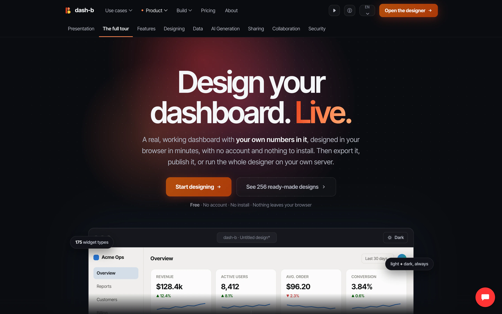
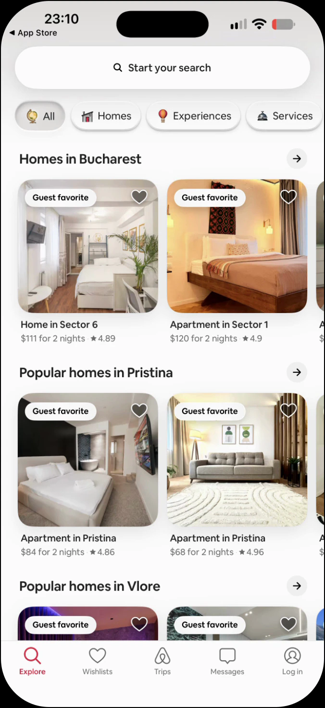
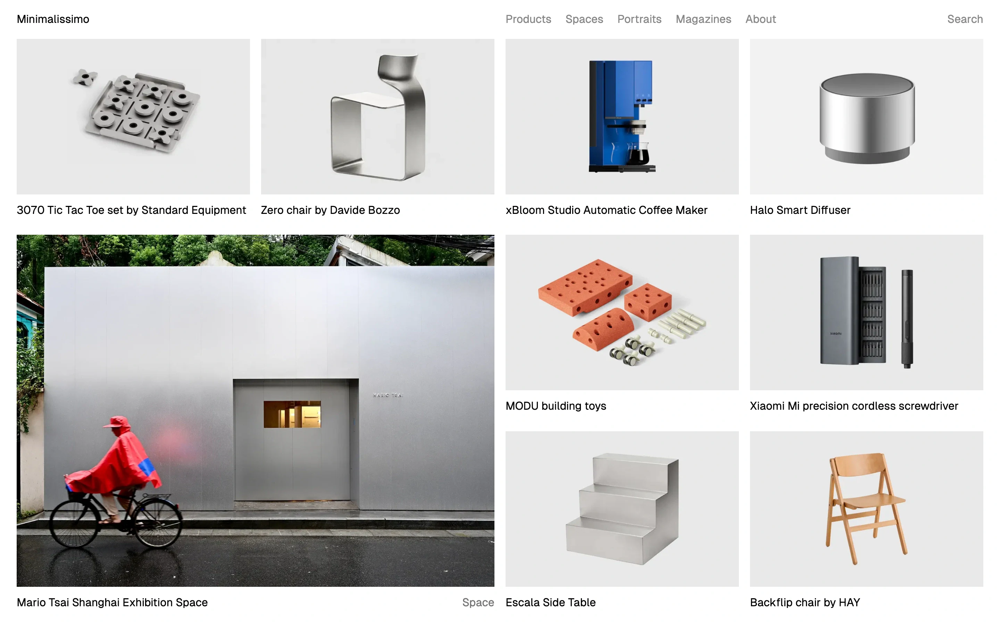

find_ui_references
在包元数据和每屏 OCR 文本上做加权检索。返回布局、token 和状态。
- 配色 · 排版 · 几何
- 每屏 OCR 与交互模式
- 平台 web ios
一个 agent 被要求"把这个界面做得像个真产品"时，通常是自己发明一套设计语汇，而不是去看一套。 uiycs 给它 685 个真实产品的截屏、真实的排版比例与配色，217 个带许可文件的字体族， 6,307 个图标名和 750 段动效——全部从本地磁盘，经一个 MCP server 提供。



服务端
每个结果都是磁盘上的绝对路径，附带它自己的许可。
在包元数据和每屏 OCR 文本上做加权检索。返回布局、token 和状态。
四个 kind，每一个都是真检索——不是元数据占位。
一个包，完整记录：每一屏和它的 OCR 文本，每一个采集视图和动效。
数据
8.4 GB 数据不进仓库。每一层都由脚本重建，并校验悬空路径。
7.8 GBOFLITF FFLOFLISC/MIT/Apache.lottie + .json安装
不用 pip install。不用 API key。server 只读本地文件，经 stdio 应答。
采集器按层从各自的公开源拉取，索引构建器随后遍历文件系统。
python tools/collect_icons.py → 五分钟内拿到 27,278 个 SVG。
只有一个变量：UIYCS_HOME。默认取仓库根，从 tools/ 里运行时自动上溯一级。
任何支持 stdio MCP 的客户端都能接。Claude Code、Cursor、Codex、ZCode、DSH——同样三行配置。
cp -r skill/uiycs-ui ~/.agents/skills/
skill 是一套工作流，不是依赖。没有 server 它会优雅降级。
{
"mcpServers": {
"uiycs": {
"command": "python",
"args": ["/path/to/uiycs/mcp_server.py"],
"env": { "UIYCS_HOME": "/path/to/uiycs" }
}
}
}# ~/.codex/config.toml
[mcp_servers.uiycs]
command = "python"
args = ["/path/to/uiycs/mcp_server.py"]
env = { UIYCS_HOME = "/path/to/uiycs" }# server 会应答吗？
printf '%s\n' '{"jsonrpc":"2.0","id":1,"method":"initialize","params":{}}' \
| UIYCS_HOME=/path/to/uiycs python mcp_server.py
# → {"result":{"serverInfo":{"name":"uiycs","version":"2.0.0"}}}